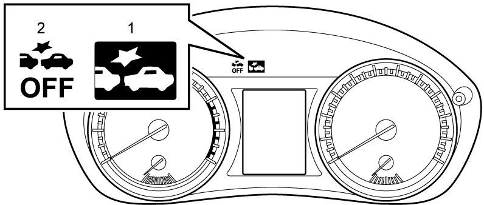

10J
| RBS Control Module Self-Diagnosis Function |
Description
RBS control module monitors conditions of the system components and circuits. When an abnormal condition in the system occurs, RBS control module performs control as follows.
Self-Diagnosis Function
RBS control module has self-diagnosis function that stores DTC for abnormalities detected in RBS system. Stored DTCs remain in memory of RBS control module unless they are cleared.
NOTE:
RBS control module does not store history DTCs of C1610 and C1640.
Warning Function
RBS control module turns on RBS indicator light (1) to warn the driver that a malfunction is detected or the system is disabled temporarily.
NOTE:
Right after setting ignition “ON”, RBS control module turns on the RBS indicator light and RBS OFF light (2). If no abnormality is detected, all indicator lights are turned off in about 3 seconds after setting ignition “ON”. If any faulty condition is found, RBS control module continues to illuminate the RBS indicator light (1).

 "Expand image")
Fail-Safe Control
When any abnormality is found, RBS control module disables RBS control.